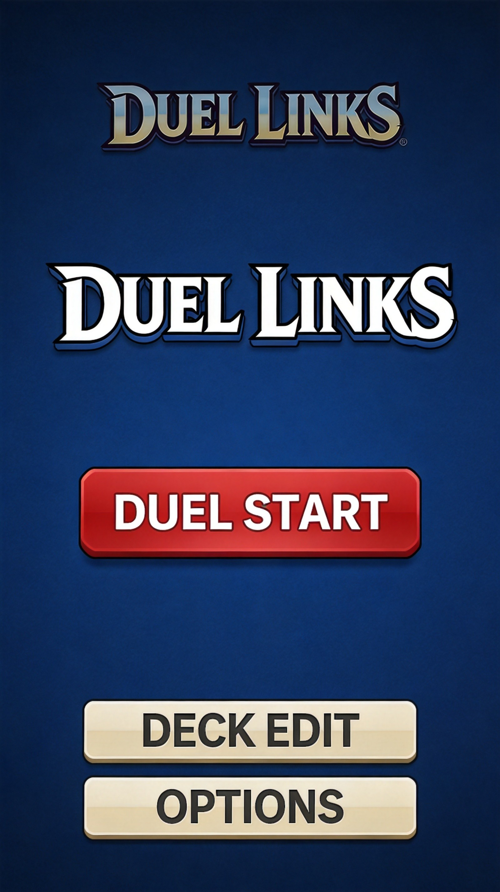
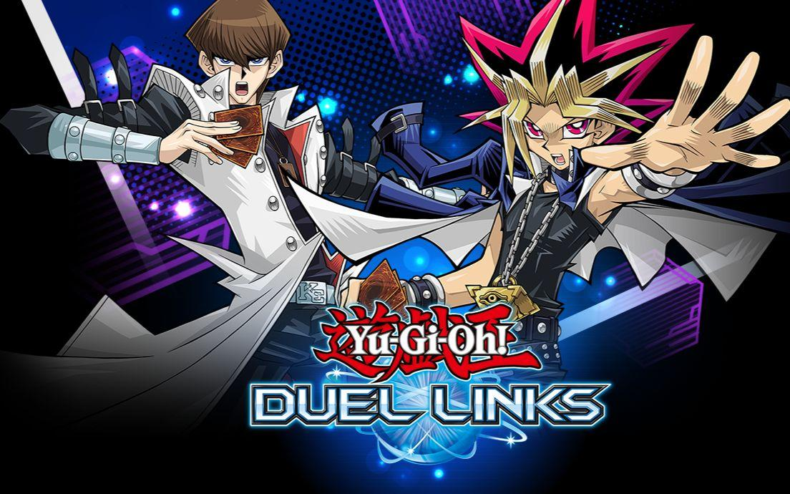
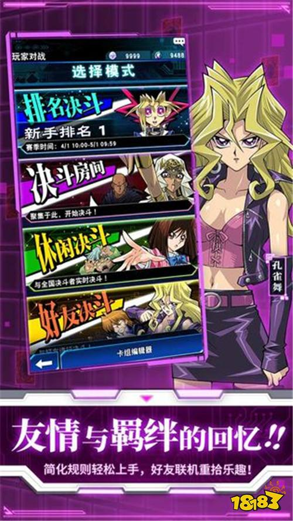
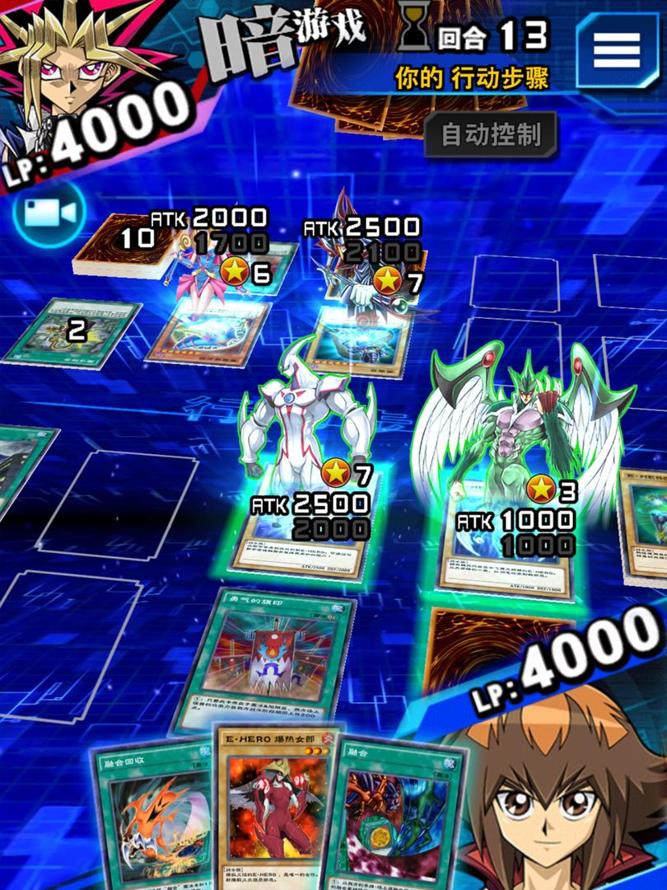
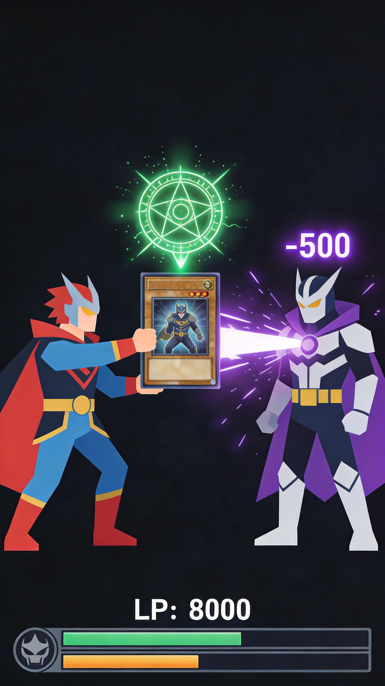

Duel Links io brings card battle action to the competitive io gaming space. Build powerful decks, master strategic card interactions, and climb the ranked ladder against players worldwide. Whether you're new to card games or a seasoned duelist, this guide covers the fundamentals and advanced strategies you need to succeed.
🎮 Game Basics

Duel Links io follows traditional card game duel mechanics: players take turns playing cards to reduce their opponent's life points to zero. Understanding turn structure and resource management is fundamental to success.
The Duel Flow
- Draw Phase - Draw a card from your deck
- Standby Phase - Some cards activate here
- Main Phase - Play monsters and spells
- Battle Phase - Attack with monsters
- End Phase - Resolve end-of-turn effects
Win Conditions
Reduce your opponent's life points to zero, force an deck-out (they can't draw), or achieve specific card-based victory conditions depending on your deck strategy.
🃏 Card Types

Monster Cards
Monsters are your primary damage dealers and effect carriers. They have attack/defense stats and often special abilities. Understanding monster typing and attributes helps you build synergistic decks.
Spell Cards
Spells provide immediate effects ranging from direct damage to searching your deck for specific cards. They can turn the tide of duels instantly.
Trap Cards
Traps are reactive cards that activate during your opponent's turn. They provide disruption, protection, and surprise factor. Good trap timing separates skilled players from beginners.
Don't overuse your resources early. Many beginners exhaust their hand quickly, leaving them vulnerable in late game. Maintain hand advantage by playing efficiently.
📚 Deck Building

Core vs. Tech Cards
Every deck needs core cards that enable your strategy and tech cards that handle specific situations. Balance is key—too many tech cards dilute your consistency.
Card Synergy
Cards that work together create powerful combinations. Build around synergies rather than individual card strength. A deck of good cards can be worse than a deck of synergistic cards.
Testing Your Deck
Before ranked play, test extensively against different deck types. Identify weaknesses and adjust. No deck is perfect—know your bad matchups and have sideboard strategies.
⚔️ Duel Strategies

Early Game
Early game is about establishing board presence and gathering information about your opponent's deck. Don't overcommit resources before understanding what you're facing.
Mid Game
Mid game involves resource trading and positioning. Each card you play should advance your game plan while disrupting your opponent's. Every decision matters.
Late Game
Late game is often decided by who has more resources or who lands the crucial game-changing card. Deck out becomes a real threat—manage your draw power carefully.
📊 Meta & Countering
The meta refers to the most popular and effective deck strategies. Understanding the meta helps you build counters and anticipate opponents.
Meta Deck Characteristics
Top meta decks typically have fast tempo, consistency, and resilience. They execute their game plan quickly and have backup strategies if disrupted.
Counter Strategy
Build tech cards specifically to counter popular strategies. Sideboard accordingly between games. The player who better adapts usually wins.

🏆 Competitive Tips
1. Know Your Deck Inside Out
Every card interaction, every opening hand scenario—you should know your deck as well as your opponent knows theirs.
2. Pay Attention to Opponent Habits
Opponents often telegraph plays through timing and behavior. Learn to read these cues for strategic advantages.
3. Manage Tilt
Bad beats happen. Don't let emotions affect decisions. Take breaks between sessions to maintain focus.

❓ Frequently Asked Questions
What's the best starter deck?
Focus on learning with decks that have straightforward strategies. Simple beatdown decks teach fundamentals before introducing complex combo mechanics.
How many copies of each card should I include?
Standard is 3 copies of most cards (the maximum). Some utility cards work better at 1-2 copies. Consider how often you want to see a card during a duel.
How do I deal with aggro decks?
Include defensive cards, life gain, and ways to stabilize early. Aggro dies to attrition if you can survive the initial assault.
What's more important: offense or defense?
Balance is key. Pure aggro can be beaten by faster decks; pure control can be overwhelmed. Most successful decks have both elements.
How do I improve my timing with traps?
Practice and experience. Watch when opponents commit resources, and anticipate their plays. Trap timing improves with game knowledge.
📝 Conclusion
Duel Links io rewards strategic thinking, deck knowledge, and adaptability. Master the fundamentals, build focused decks, and learn from every duel. Competitive card games take time to improve—be patient and enjoy the process.
Enjoy card battles? Check out Gartic.io for creative multiplayer games, or explore Skribbl.io for a different kind of competitive fun.
Last updated: February 2, 2024
Written by the iogameguide.com team